2 Getting started
2.1 System requirements
The Danube Indeet Model (DIM) is a Windows desktop application.
- Operating system: Windows 10 or newer (64-bit)
- Processor (CPU): No strict requirements
- Memory (RAM): Minimum 16 GB, 32 GB or more recommended
- Graphics (GPU): Not required for computation
2.1.1 Network
An internet connection is required for:
- location-based data,
- PV production data,
- meteorological data (e.g., precipitation).
The application can run offline, but these features will be unavailable.
2.2 Simple example
This section guides you through creating a simple project with one scenario containing:
- A Photovoltaic (PV) system,
- A Battery Energy Storage System (BESS), and
- A fixed electricity consumption.
By following these steps, you will learn the basic workflow of the DIM: creating a project, configuring components, running optimization, and viewing results.
Step 1: Launch the application
- Launch the Danube Indeet Model application.
- You will see the welcome window with options to create a new project, open an existing project, or check the user manual.

Step 2: Create a new project
- Click Create new project in the welcome window.
- The New Project popup window will appear.
- Enter a project name (e.g.,
My project). - Optionally, change the project location by clicking Browse… and selecting a folder.
- Click Create project to confirm.
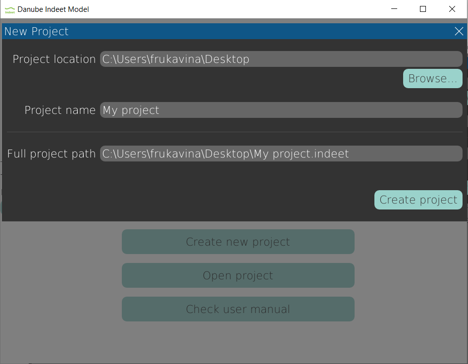
A new project opens in the main window.
Step 3: Create a new scenario
- Click Add new scenario in the sidebar (left panel).
- A default scenario named
Scenario 1will appear. - Expand the scenario and click System structure to view the system configuration interface.
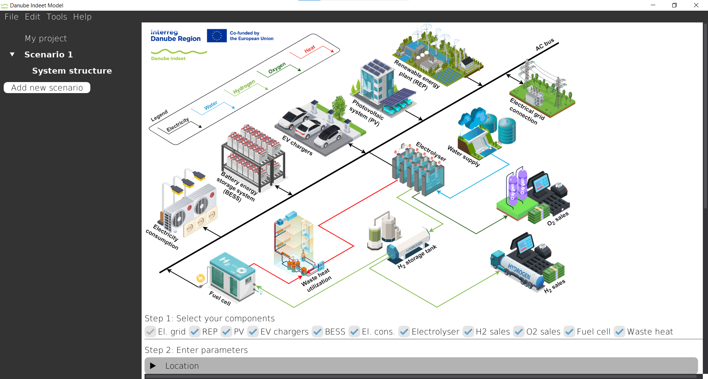
The Main window now shows the system configuration interface.
Step 4: Select components
In this example we will consider:
- Electrical grid connection
- PV system,
- BESS,
- fixed electricity consumption.
The scenario is initialized with all components already selected. To configure our desired configuration:
- Deselect components that are not needed (e.g., Electrolyser, EV chargers).
- Ensure the following components are selected: El. grid, PV, BESS, El. cons.
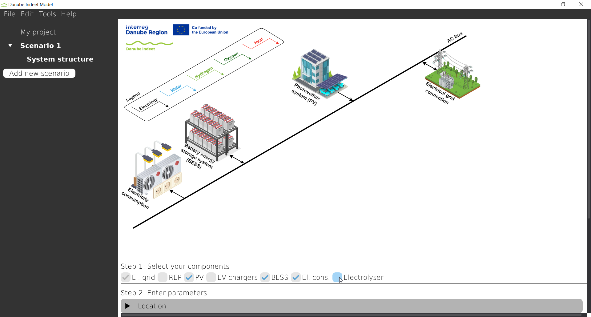
Step 5: Configure location
The Location component defines where the energy hub is located. This affects solar irradiance data and other location-specific parameters.
- Expand the Location section.
- Search for Zagreb.
- Select Zagreb in Municipality dropdown.
- Verify that your coordintes are: 45.813, 15.977 and that country is Croatia.
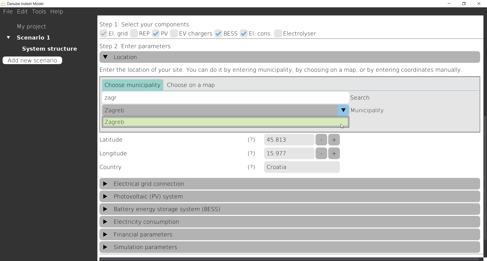
Step 6: Configure electrical grid
The Electrical grid connection component defines electricity prices and connection conditions. Since the location is in Croatia, electricity tariff models from Croatia became available to use. To configure:
- Expand the Electrical grid connection section.
- Expand Grid connection tree node.
- For Use predefined connection type select
SN - Bijeli - Zagreb. - Check Grid connection already exists.
- Set Existing connection size to 270 kW.
- Expand Electricity supply tree node.
- For Use predefined supply models select
HEP elektra - SN bijeli.
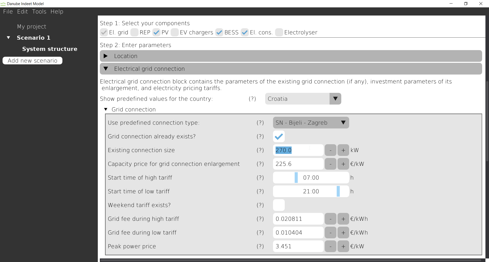
Step 7: Configure PV system
The PV component represents solar energy generation capacity. In this example, we only define the available installation area.
- Expand the Photovoltaic (PV) system section
- Click Add new array, then click Done in the pop-up window.
- You will see a default PV array. Configure the following:
- Available area: Enter the area of 1000 m\(^2\)
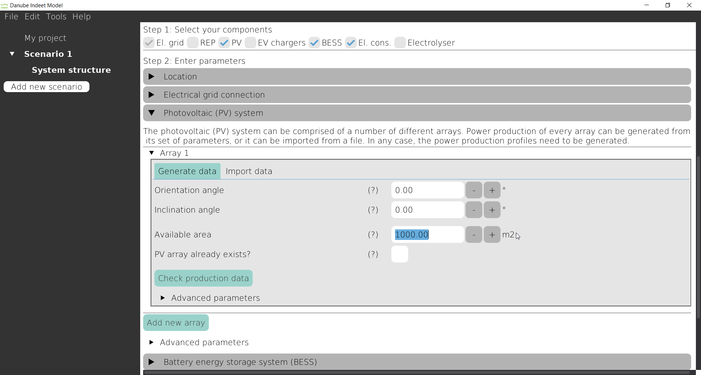
Step 8: Configure BESS
The Battery Energy Storage System (BESS) stores excess solar energy for later use. Since the default parameters for BESS are already entered we can just skip BESS component.
Step 9: Configure electricity consumption
- Expand the Electricity consumption section.
- Click Add new consumer, then click Done in the pop-up window.
- Select building type:
- Large hotel
- Enter:
- Annual electricity consumption: 1000 MWh
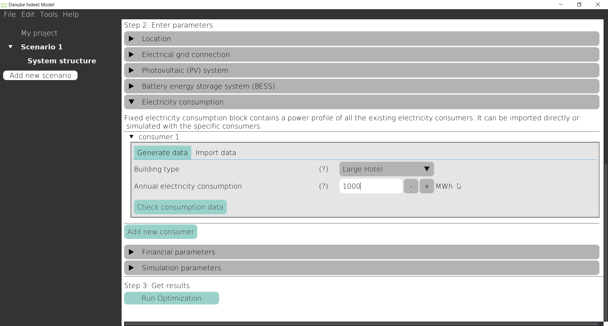
Step 10: Financial parameters
In this example we will set subsidy to 50%:
- Click on Apply subsidy to all components.
- Enter 50% in Investment subsidy field.
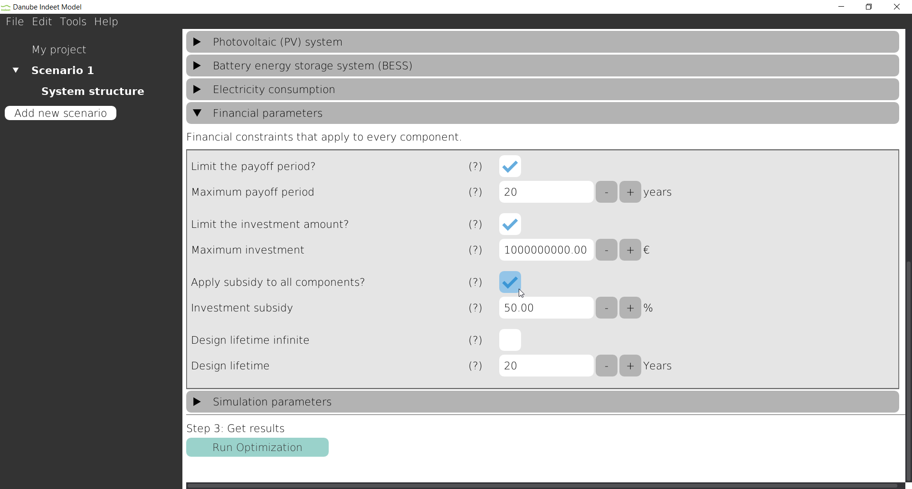
Step 11: Run optimization
Once all components are configured:
- Scroll to the bottom of the System structure view.
- Click Run Optimization to start the optimization process.
- A progress indicator will appear during computation.
- After completion, the Results node will appear in the Sidebar under the scenario.
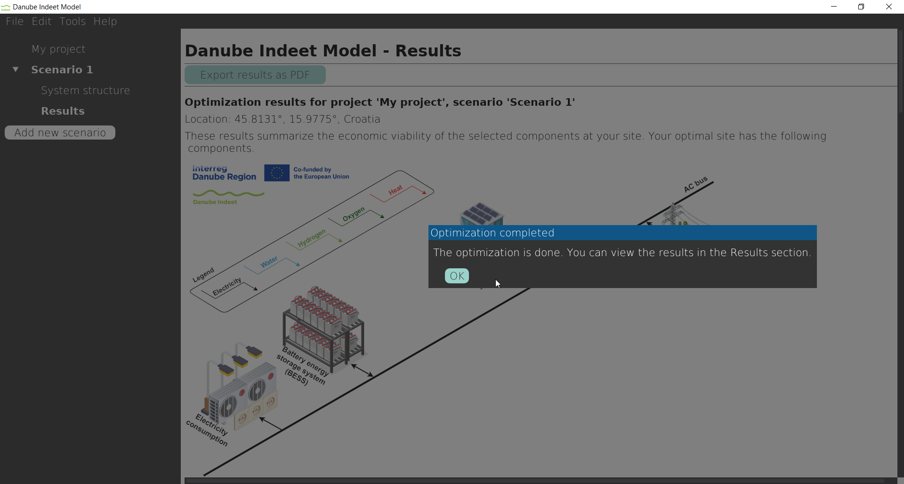
Step 12: View Results
- In the Sidebar, click Results under the scenario.
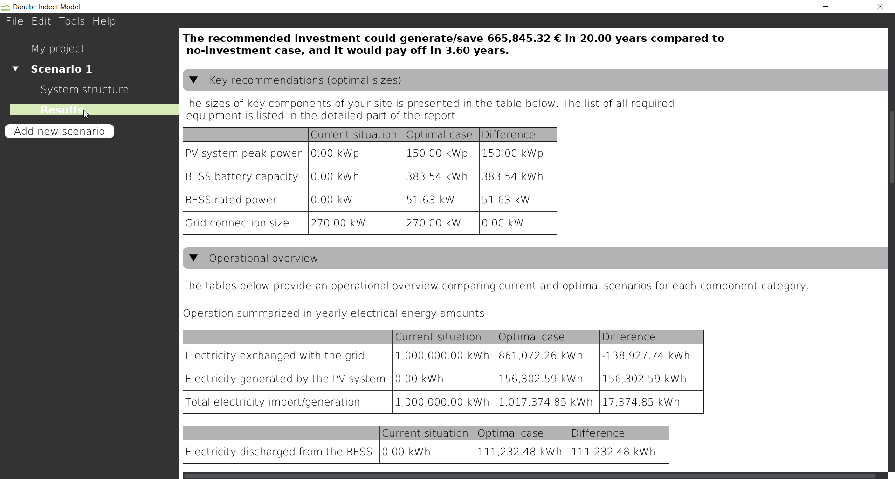
The Main window now displays the calculated optimal system configuration, its optimal operation, and financial indicators.
2.3 Next steps
You have now created a project and optimized a scenario with a simple PV + BESS system. Based on your location’s solar resources and your specified constraints, the optimization algorithm has determined:
- Optimal system sizes
- Operational schedule
- Financial performance
After optimization, the original scenario becomes locked and inputs cannot be modified.
To test alternative assumptions:
- Right-click the scenario in the Sidebar.
- Select Duplicate.
- Modify parameters in the duplicated scenario.
- Run the optimization again.
- Compare results.
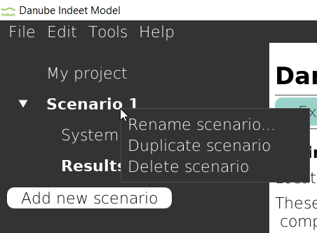
For example, try changing the subsidy from 50% to 0% and observe how this affects the investment decision.
For more detailed information about each component, refer to Section 4.2.